Straordinario percorso in val Tralba, molto complesso, su sentieri neppure segnati su alcuna mappa, sul versante Ovest del Pisimoni (in particolare sotto al Ciuc da la Muinie - Cuel di Sôre). Gita sociale con guida l'autore di Trois Neris, A. Armellini.
Giusto bene che per il sentiero del Plan Austìn c'ero passato un mese prima.
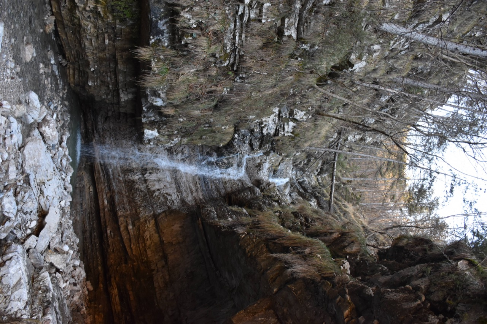La parte finale della val Alba, oscurata dall'ombra del Ciuc da la Muinie. In primo piano lo Zouf di Mueç, dietro la Grauzaria e a dx il Masareit.
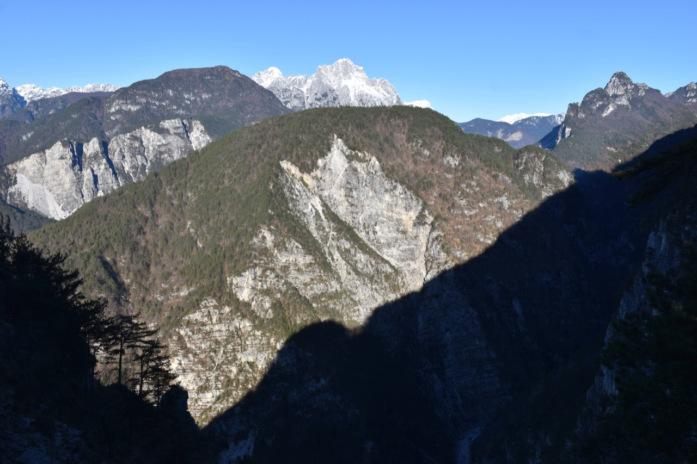Su quei contrafforti meridionali del Pisimoni c'è un antro che da tempo desidero visitare.
Inizia l'avventura.
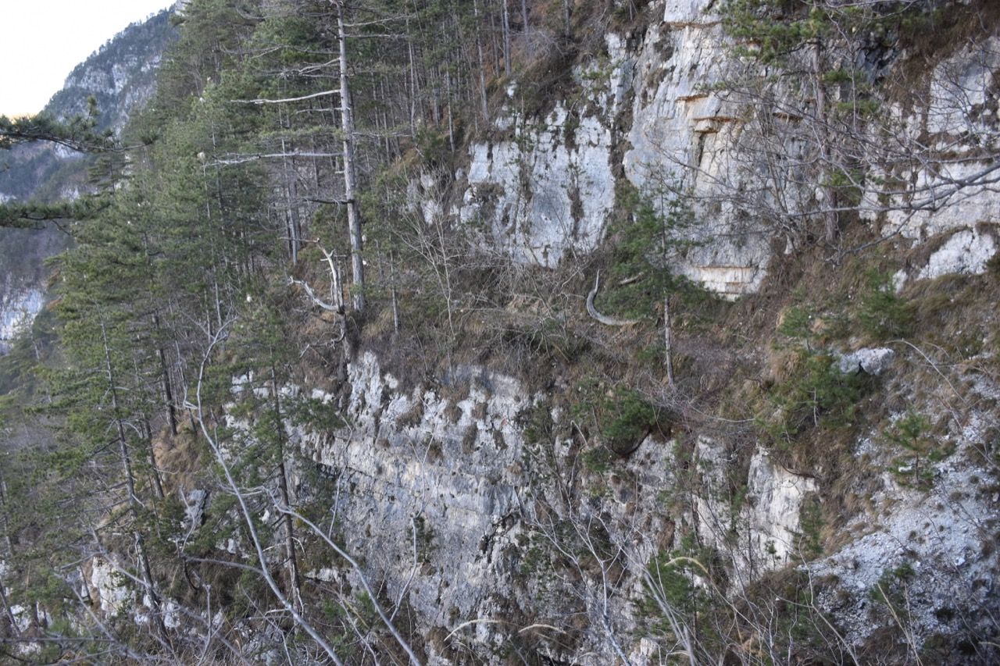
Cuel da la Ruvîs, Cuel da la Ceit e Cuel di Fedeveiz. Da qualche parte lì in mezzo passa il leggendario troiàt.
Le cenge su cui si sviluppa il percorso sono stupende.
Verso Mueç.
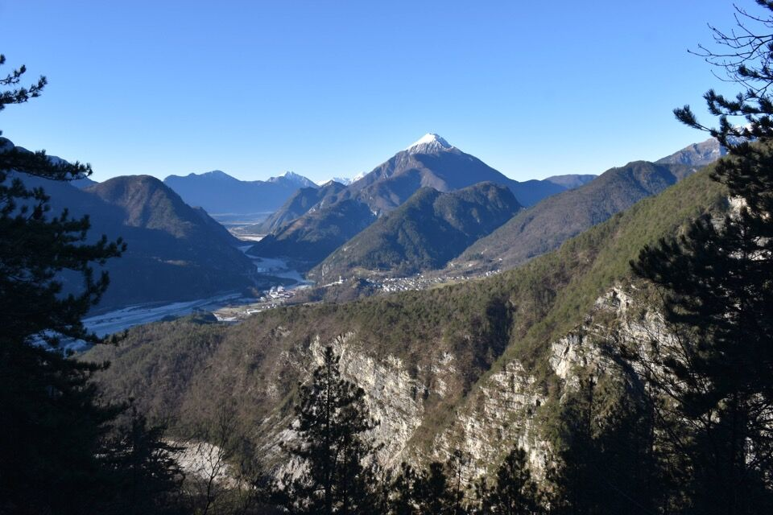Verso la val Tralba, con il Masareit in fondo. Fino alla Stua Alta di Tralba ci penseremo la prossima volta.
Il passaggio sotto le pareti, prossimi al rio di Sant'Antonio, è davvero emozionante.
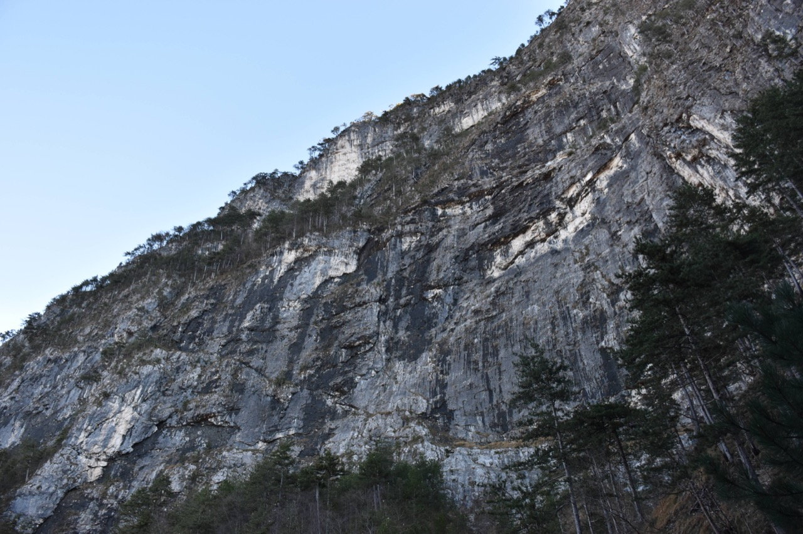 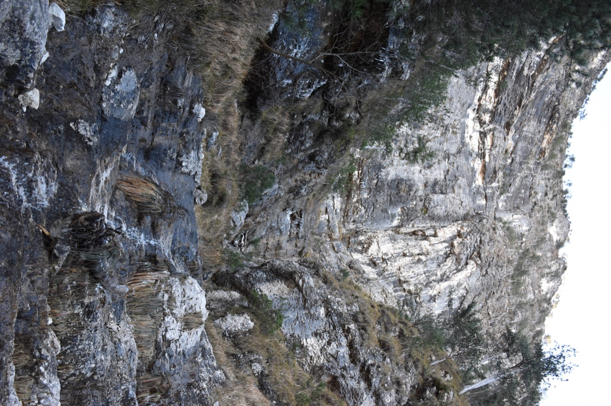Creta Grauzaria.
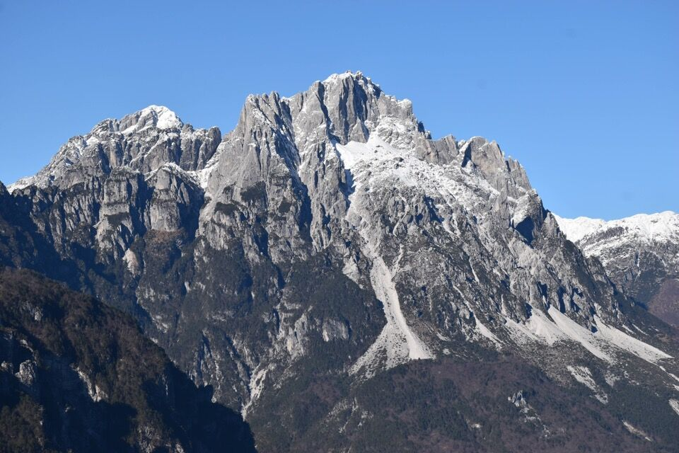Fino alla Stua Alta di Tralba è ancora troppo lunga, per cui ci fermiamo e iniziamo a scendere verso lo stâli dal Gnazio. In foto la q1400 del Cuel di Sôre.
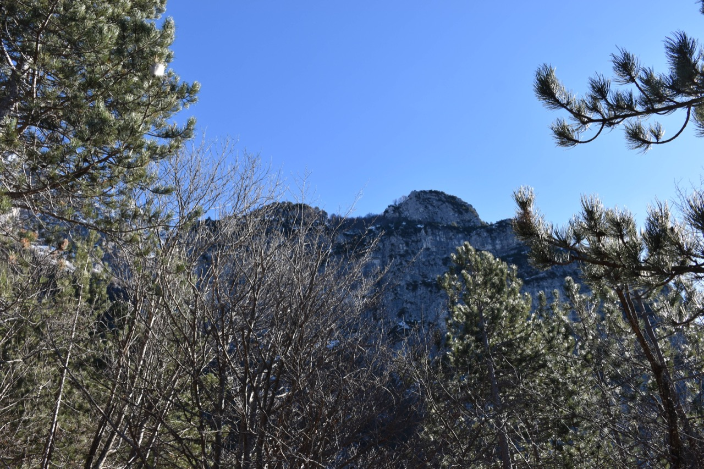Cambi di direzione improvvisi e passaggi insperati rendono indispensabile qualcuno che conosca già il percorso.
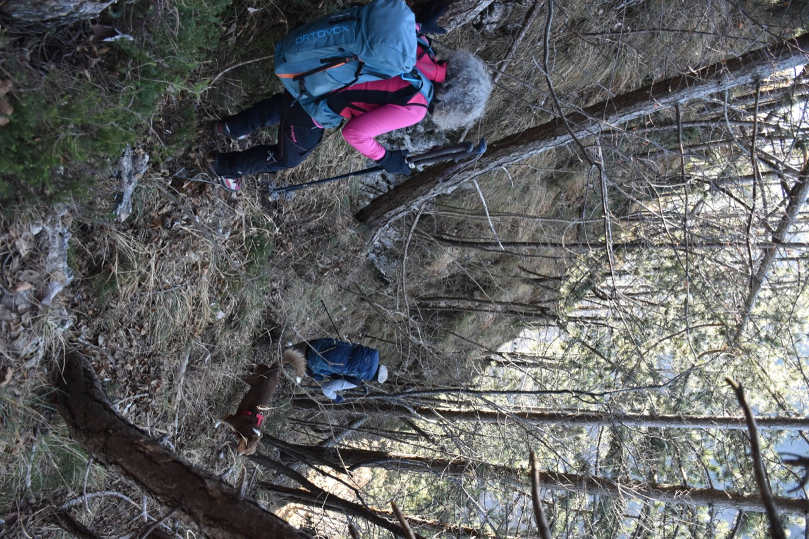La costa della Sega con il Cuel da le Fratte, sotto cui passa il bellissimo sentiero di collegamento fra lo stavolo Rosean e casera Crostis.
Fra sentieri segnati ma inventati (dove non si passa) e tracce non segnate sulle mappe, la zona è, oserei dire, fra le più interessanti di tutto il Friuli. Non a caso la val Alba è diventata la zona preferita da Antonio, dopo la val Raccolana: valli queste di cui conosce ogni pietra.
Lo stâli dal Gnazio è in una posizione incredibile - ma bisogna andarci per capire perché.
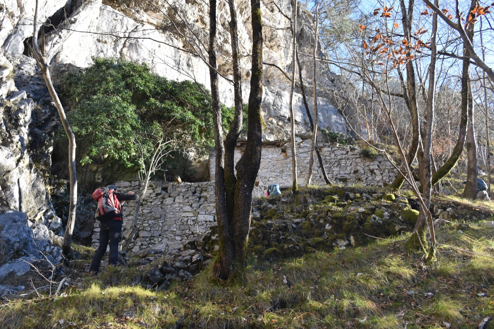 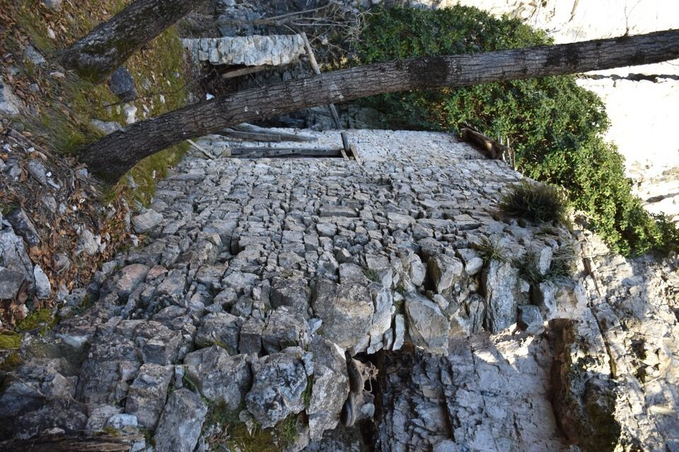Torniamo a Ovedasso per il sentiero basso, che desideravo percorrere da diverso tempo.
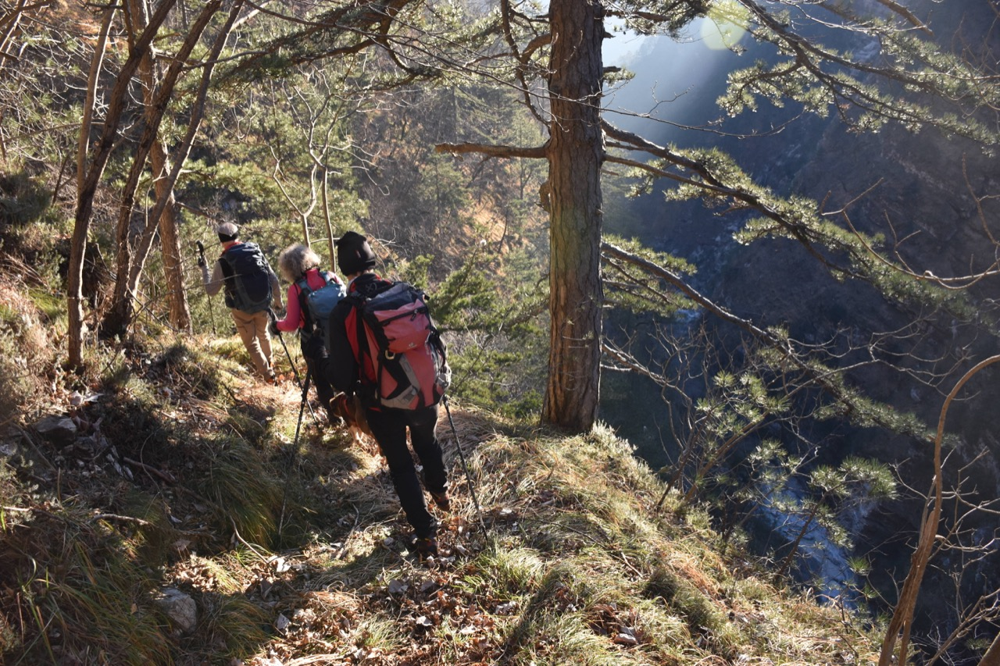 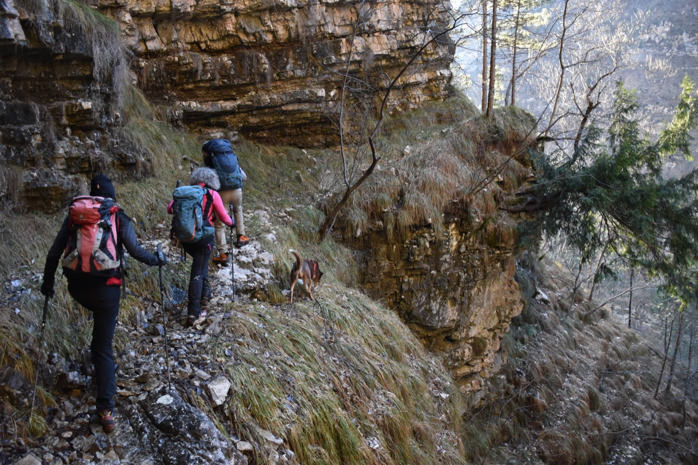 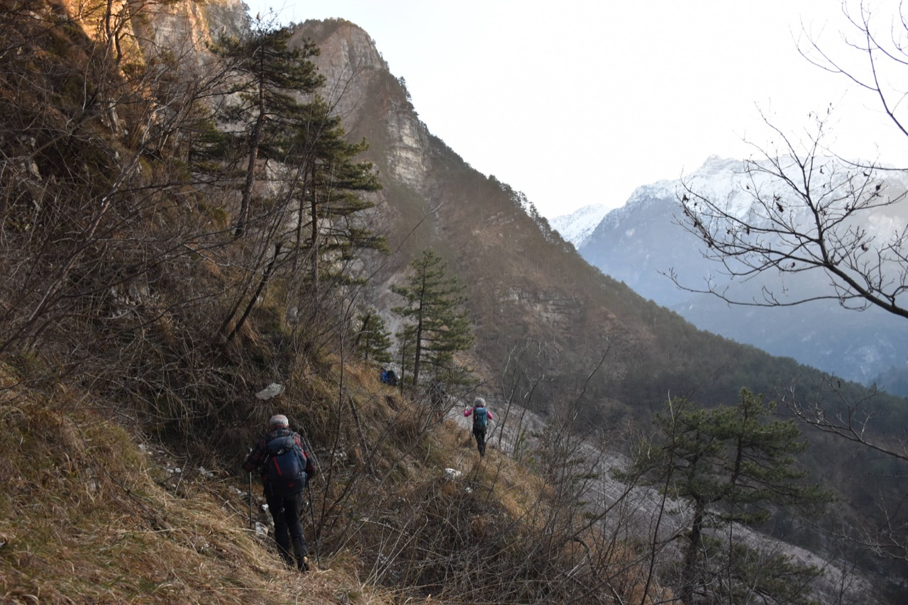Stamattina eravamo lassù.
Il Cuel di Sôre, con il versante che abbiamo traversato lungo le sue cenge.
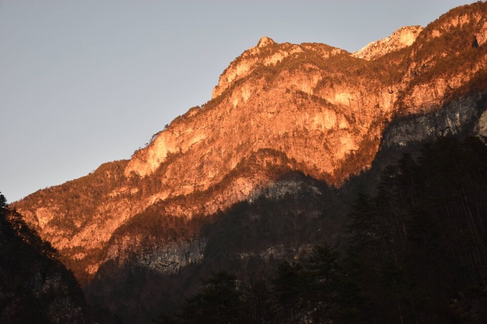